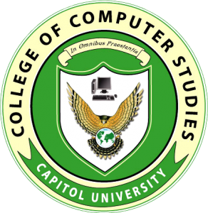
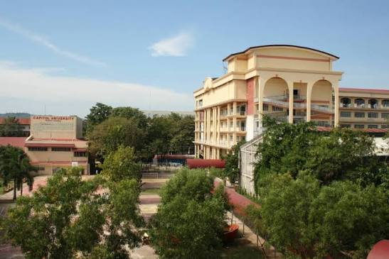

Capitol University
Google Map Location
Guidance Office
Email: guidance_center@g.cu.edu.ph
Phone: 0935-123-1235
Contact Person: Dr. Josie Insigne (Head / Contact for Applications)
Id Center
Email: idcard@columbia.edu
Phone: (212) 854-4400
Contact Person: Mr. Baracho (Head / Contact for Applications)
Deans Office
Email: cj.ranido@g.cu.edu.ph
Phone: (088) 864-8865
Contact Person: Prof. Cyril Jane C. Ranido

Capitol University